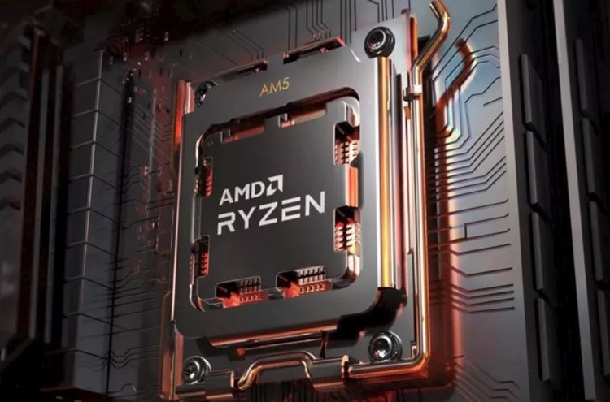

AMD представила Ryzen 7000
Как и ожидалось, компания AMD представила сегодня в рамках выставки Computex 2022 новое поколение процессоров — Ryzen 7000. Новинки построены на новой архитектуре Zen 4, обладают встроенной графикой RDNA 2, выполнены в новом конструктиве под Socket AM5, поддерживают новую память и интерфейсы, и наконец, это первые в мире настольные 5-нм центральные процессоры.
Процессоры Ryzen 7000 предложат до 16 ядер Zen 4 и будут обладать удвоенным по сравнению с предшественниками на Zen 2 и Zen 3 объёмом кеша второго уровня — по 1 Мбайт на ядро. Про кеш третьего уровня ничего не сообщается, равно как и о перспективах выхода чипов на Zen 4 с дополнительным кешем 3D V-Cache
Другой важной деталью новых чипов станет значительный прирост тактовой частоты. AMD указывает, что частота в режиме автоматического разгона (Max Boost) будет выше 5 ГГц. Кроме того, в рамках презентации было показано, как 16-ядерный образец процессора Ryzen 7000-й серии смог обеспечить в игре Ghostwire: Tokyo частоту выше 5,5 ГГц, что весьма впечатляет. Правда, для его охлаждения использовалась СЖО.
AMD отметила, что новые процессоры обеспечат прирост производительности одного потока на более чем 15 % (по сравнению с Ryzen 9 5950X в Cinebench R23). Ускорение обеспечат увеличенный кеш, повышенная частота и архитектурные улучшения, которые должны принести увеличение IPC (количество исполняемых инструкций за такт). К сожалению, AMD не уточняла, какой именно прирост IPC даст архитектура Zen 4 сама по себе. Предусмотрены и дополнительные инструкции, ускоряющие работу процессоров в системах искусственного интеллекта и машинного обучения.